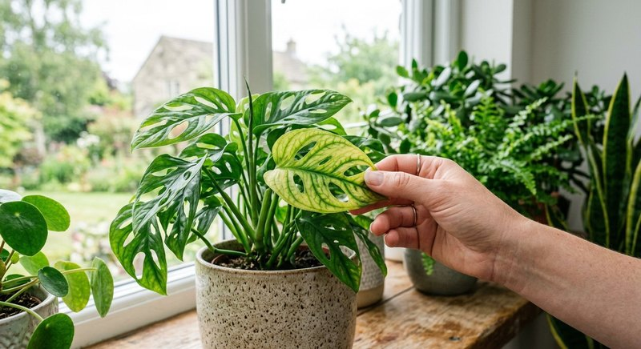

Проблемы растений · 5 мин чтения
Как понять, что растению не хватает питания: признаки
Растение может выглядеть ослабленным по разным причинам. Дефицит питания — только одна из них, поэтому перед подкормкой важно исключить нехватку света, неправильный полив, тесный горшок и вредителей.
Материал обновлён 24.10.2026 · Справочная информация, не заменяет инструкцию на упаковке.

Какие признаки стоит заметить
Возможные сигналы — медленный рост в активный сезон, бледные новые листья и слабые побеги. Однако эти признаки неспецифичны: такой же вид бывает при плохом освещении, холоде, повреждённых корнях или неподходящем pH субстрата.
Рисунок и возраст листьев важны. Разные элементы перемещаются в растении по-разному, но домашняя диагностика только по цвету листа часто ненадёжна. Сфотографируйте растение, проверьте динамику и условия, а не делайте вывод по одному симптому.
Проведите проверку до подкормки
Сверьте влажность грунта, наличие отверстий в горшке, освещение и температуру. Посмотрите, не зажаты ли корни и не заправлен ли грунт удобрением длительного действия. Осмотрите листья и стебли на вредителей.
Если растение активно растёт, давно не получало питания и остальные условия стабильны, плановая подкормка может быть уместна. Выбирайте средство по назначению, соблюдайте дозировку и не смешивайте несколько продуктов одновременно.
Безопасная подкормка
Используйте только норму, указанную производителем для вашего растения и способа внесения. Не увеличивайте дозу, если видимый эффект не появился сразу: рост оценивают со временем, а избыток солей может усугубить состояние.
Семяздрав — жидкий универсальный концентрат для культур, перечисленных в описании продавца. Он может быть частью обычного ухода, но не заменяет диагностику, полив, свет и устранение вредителей.
Возраст листа и подвижность элементов: что можно понять дома
Некоторые питательные элементы растение может частично перемещать из старых тканей в молодые, другие почти не перемещаются. Поэтому учебники описывают различия симптомов на старых и новых листьях. В домашних условиях эта подсказка работает ограниченно: один и тот же внешний рисунок дают pH субстрата, холодные корни, перелив, недостаток света и повреждение корней. Использовать возраст листа можно как часть наблюдений, но не как самостоятельный анализ почвы.
Сначала отметьте, где началось изменение: нижние листья, молодой прирост, края, пространство между жилками или вся крона сразу. Затем сопоставьте с событиями: пересадкой, сменой окна, отопительным сезоном, новым удобрением или обработкой от вредителей. Массовое изменение после переезда чаще связано с условиями, а медленное бледнение активно растущего растения в старом субстрате может включать и питание. Для жёлтых листьев есть отдельная пошаговая диагностика почему желтеют листья.
- зафиксируйте, старые или новые листья изменились первыми;
- сфотографируйте растение при одном и том же свете;
- проверьте влажность не только на поверхности;
- осмотрите корни и дренаж при запахе или застое воды;
- вспомните дату пересадки и всех внесений удобрений;
- исключите вредителей на нижней стороне листьев.
Пробная плановая подкормка и наблюдение без спешки
Если условия стабильны, растение активно растёт, а субстрат давно не обновлялся, можно вернуть обычную плановую подкормку строго по этикетке. Не называйте её лечением конкретного дефицита: это проверка одной гипотезы. Запишите дату, концентрацию и состояние молодого прироста. Старый повреждённый лист может не позеленеть обратно, поэтому результат оценивают по новым листьям и общему темпу за несколько недель, при неизменных свете и поливе.
Не вносите по очереди железо, магний, витамины и комплексное удобрение: суммарная доза станет неизвестной, а симптомы перекорма наложатся на исходную проблему. Один продукт, одна концентрация и один изменённый фактор дают понятную обратную связь. Если после внесения появляются сухие края, белый налёт или увядание при мокром субстрате, остановитесь и проверьте сценарий перекорма удобрением.
Иногда правильным решением будет не подкормка, а пересадка. Разрушившийся кислый субстрат, корни по всему кому и вода, мгновенно уходящая по стенкам, не исправляются раствором. После пересадки первая доза зависит от заправки новой смеси; этот порядок разобран в статье о питании после пересадки. Такая последовательность защищает растение от попыток «докормить» проблему, которая находится в корнях.
Если растений одного вида несколько и условия у них одинаковые, не меняйте схему всем одновременно при сомнительном симптоме. Сначала исправьте очевидные условия, затем сравните динамику. Такой контроль особенно полезен в коллекциях, где горшки стоят на разных окнах и получают неодинаковый свет.
Частые вопросы
Какие листья желтеют при нехватке питания?
Картина зависит от элемента и вида растения. По одному жёлтому листу диагноз поставить нельзя — проверьте уход и корни.
Можно ли подкармливать растение, если оно болеет?
Сначала выясните причину и стабилизируйте растение. Удобрение не лечит инфекцию и может добавить нагрузку повреждённым корням.
Можно ли точно определить нехватку азота или железа по фотографии?
По одному фото обычно нельзя. Нужны вид растения, возраст листьев, история ухода, состояние корней и субстрата. Фото полезно для динамики, но не заменяет проверку условий.
Через сколько ждать улучшения после подкормки?
Смотрите на новый прирост в течение нескольких недель. Уже повреждённая ткань листа часто не восстанавливается, даже если причина устранена.